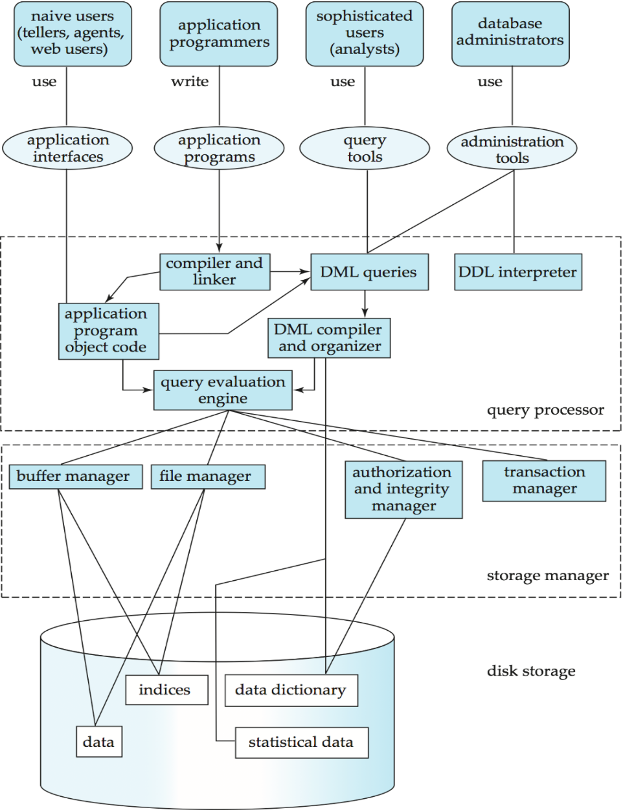
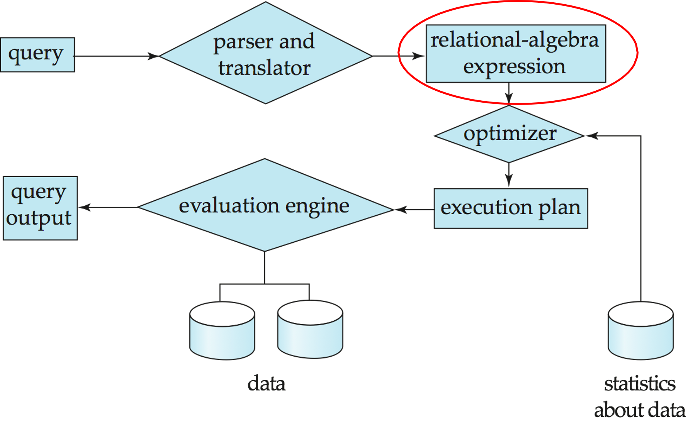
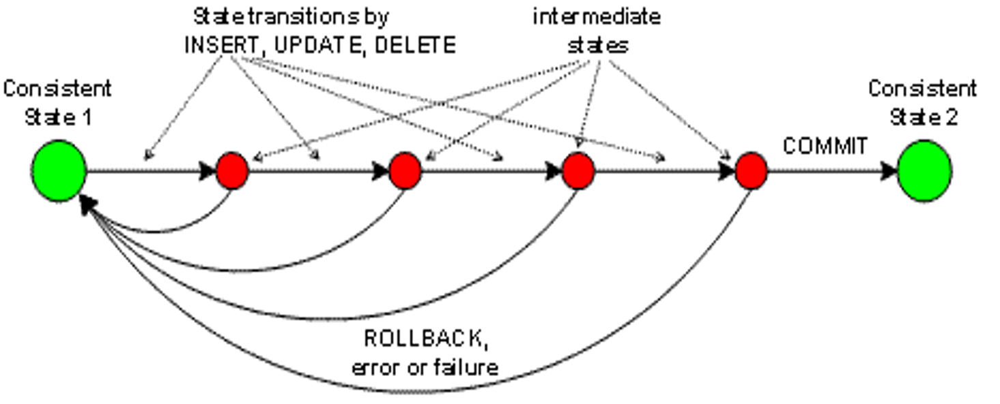

Relational models 2
Lecture 6
Thursday - Jan 30, 2025
Housekeeping
Discussion items
Deliverable 3 - Harmonize Ideation - due Sun, 2/2
Deliverable 4 - Video Pitch - due Sun, 2/9
Quiz 1 - ER Models - due THU, 1/30
Homework 2 - ER Diagrams - due Tue, 2/4
Deliverable 2 - Team Formation - Due Sun, 1/26
Practice Quiz 1 - ER Models - Start now!
| Module | Week | Date | Day | Notes and Lectures | Activities and due dates |
|---|---|---|---|---|---|
| ER Models | 3 | 1/30 | Thu | L6:Relational models 2 | Q1:Entity-relation models |
| ER Models | 3 | 2/2 | Sun | Prj3:Ideation | |
| Relational Alg. | 4 | 2/4 | Tue | L7:Relational Algebra 1 | PQ2:Relational Algebra; HW2:Entity Relation Models |
| Relational Alg. | 4 | 2/6 | Thu | L8:Relational Algebra 2 | |
| Relational Alg. | 4 | 2/9 | Sun | Prj4:Video Pitch; Dis2:Relational Alg. | |
| Relational Alg. | 5 | 2/10 | Mon | Last day for progress reports | |
| Relational Alg. | 5 | 2/11 | Tue | L9:Analysis and Normal Forms 1 | |
| Relational Alg. | 5 | 2/12 | Wed | Career Fair (10am-3pm) |
Taking stock
Course to date
Topics
- Database design
- Conceptual design
- entities, attributes and relationships
- Chen diagrams
- Logical design
- Cardinality and Participation
- Crow’s foot diagrams
Skills and tools
- Quarto workflow and output formats
- GITHUB and git
- graphviz (not just for ER diagrams!)
- mermaid (not just for ER diagrams!)
- Zoom videos and Kaltura
Next up:
- DBMS, SQL and the Relational Model
- Understanding the DBMS platform
- Interacting with a DBMS
- Bridging the gap between ER-diagrams and SQL
Databases and DBMS
A database ecosystem
A heck of a lot more than just data!
- Users and their needs
- Storage manager
- Query manager
- Physical storage
- Ways to connect
Designing a database
Good design requires that we develop a better understanding of the database itself, so that we can more smoothly translate the conceptual and logical designs into a physical design.
The choice of database and DBMS may constrain or shape our final design.

Users and their needs
- End user
- Uses application interfaces to access database
- Application programmer
- Develops application interfaces (e.g., Web, API, mobile)
- Business Analyst
- Uses query tools to directly access the data base (e.g. statistical business analyst)
- Database Administrator (DBA)
- Designs logical and physical schemas
- Handles security and authorization
- Oversees data availability, crash recovery, software updates
- Monitors performance and tunes database as needs evolve
- Manages users and access control
Storage manager
Storage manager
- a program that provides the interface between the low-level data stored in the database and the application programs and queries submitted to the system.
Responsible for
- Interaction with the file manager
- Efficient storing, retrieving and updating of data
Considerations
- Types of storage access
- Types of file organization
- Types of indexing and hashing
- Types of authorization and access control
- Data integritity
Query manager
Lots going on in between request and response!
- REQUEST (query)
- query parser
- relational algebraic evaluationr
- optimizer
- planner (detailed code)
- evaluator
- RESPONSE (query output)

Transaction example
A transaction is a collection of operations that performs a single logical function in a database application
Transaction-manager ensures that the database remains in a consistent (correct) state despite system failures (e.g., power failures and operating system crashes) and transaction failures.
Concurrency-control manager controls the interaction among the concurrent transactions, to ensure the consistency of the database.

ACID properties
- Atomicity
- Either all operations of the transaction are properly reflected in the database or none are
- Consistency
- Execution of a transaction in isolation preserves the consistency of the database
- Isolation
- Although multiple transactions may execute concurrently, each transaction must be unaware of other concurrently executing transactions. For every pair of transactions Ti and Tj, it appears to Ti that either Tj, finished execution before Ti started, or Tj started execution after Ti finished
- Durability
- After a transaction completes successfully, the changes it has made to the database persist, even if there are system failures
Accessing the DBMS
- Using a command line
- SSH into server to script creation and population of the databases.
- Using a connector
- Using an API
- ODBC, REST, graphQL or other approaches to manipulate aspects of the data base.
- Using PHPMyAdmin
- Usually through a web browser to manage, monitor and tune the overall system.
- Using a PHP full stack
- To run the application and use the database.
-
- LAMP Linux : Apache : MySQL : PHP/Perl/Python
- Using NodeJS full stack
- To run the application and use the data base
-
- MEAN Mongo/MySQL : Express : Angular : Node
-
- MERN Mondo/MySQL : Express : React : Node
DBMS used in CMSC 508
MySQL
MySQL is a prominent open-source relational database management system that operates on a client-server model, making it a great choice for handling large-scale database applications and supporting multi-user environments.
- Deployment and Setup
- Requires a separate server setup, involving a more complex installation process and server maintenance.
- Concurrent Access
- Can handle multiple users and applications simultaneously, making it a better fit for web applications or systems with high concurrency requirements.
- Storage and Performance
- Often better suited for large datasets and offers higher performance for complex queries, thanks to optimization features and more expansive indexing options.
SQLLite
SQLite is a self-contained, serverless, and zero-configuration database engine commonly embedded into mobile and desktop applications for local storage and capable of handling smaller-scale database needs with ease.
- Deployment and Setup
- Extremely lightweight and easy to set up, with no server to install or configure.
- Concurrent Access
- Generally supports single-user systems better, and might encounter locks or bottlenecks with multiple concurrent accesses.
- Storage and Performance
- Optimized for local storage with smaller databases, with a file-based storage system that might be less efficient for large datasets or complex queries.
Intro to SQL
Interacting with the database
A DBMS is software that manages databases, providing an interface between users, applications, and the database. The DBMS handles the internal mechanics of data storage, querying, transaction management, and access control. When users or applications issue commands, the DBMS processes these commands and ensures that the database remains consistent, efficient, and secure.
Interacting with a Database Management System (DBMS) and a database involves several layers of operations, each designed to handle a specific aspect of how data is stored, managed, secured, and retrieved.
SQL (structured query language) is the computer language we use to interact with the DBMS.
SQL (Structured Query Language )
SQL (Structured Query Language): is a standardized language used for managing and querying relational databases. It provides commands for defining, manipulating, controlling, and retrieving data in databases.
ANSI SQL Standard: ANSI (American National Standards Institute) defines the core SQL standard, ensuring a common foundation for relational database operations across different systems, though specific features may vary by vendor. The most recent version of the SQL standard is SQL:2023, formally adopted in June 2023.
SQL Dialects by Vendor: While adhering to ANSI SQL, many database vendors (like MySQL, PostgreSQL, Oracle, SQL Server) extend SQL with proprietary features (e.g., Oracle’s PL/SQL, Microsoft’s T-SQL) to support additional functionalities unique to their systems.
SQL command groups
SQL commands are grouped based on what they do to/for the DBMS. We sometimes refer to these groups as separate languages: DDL, DML, DCL, and TCL.
Design and Structure (DDL): When building a database, DDL is the first interaction, defining how data will be stored and structured. This foundational step ensures the database can efficiently support future operations.
Manipulating and Retrieving Data (DML): The core daily interactions with the database happen through DML. Whether adding new entries, retrieving data, or updating records, these operations are what end-users experience.
Security and Permissions (DCL): Modern databases are often accessed by multiple users and applications. Ensuring that data access is controlled and secure is essential, and DCL ensures that only the right users have the appropriate access levels.
Maintaining Data Integrity (TCL): In multi-user environments or where transactions involve complex steps (e.g., financial transactions, inventory updates), TCL ensures that the database remains in a consistent state even when failures or conflicts occur.
DDL (Data Definition Language)
- Purpose: Defines the structure and organization of the database.
- Role: DDL commands interact directly with the DBMS to create, modify, or delete database objects such as tables, indexes, and schemas.
- Example: When creating a new table, the DBMS allocates the necessary storage and manages the metadata that defines the table structure. DDL commands ensure that the database schema evolves as the application grows.
- Use Cases:
- Creating a new table to store user data.
- Altering the structure of an existing table to accommodate new fields.
DDL (Data Definition Language)
Key DDL commands include:
CREATE: Used to create new database objects like tables, indexes, views, or databases.ALTER: Used to modify the structure of an existing database object (e.g., adding or removing columns in a table).DROP: Used to delete database objects like tables, indexes, or entire databases.TRUNCATE: Removes all records from a table, but keeps the table structure intact.RENAME: Used to rename database objects.
DDL commands define and change the structure or schema of a database, unlike DML, which focuses on manipulating the data within those structures.
DDL (Data Definition Language)
- DDL compiler generates a set of tables stored in a data dictionary
- Data dictionary contains metadata about:
- Database tables, fields and data types
- Primary and foreign keys
- Data integrity constrants
- Referential integrity
- Access and authorization rules
DML (Data Manipulation Language)
- Purpose: Manages the actual data within the database.
- Role: DML commands interact with the DB to insert, retrieve, update, and delete data. The DBMS processes these requests and ensures the data is accessed efficiently and accurately.
- Example: When querying data (e.g.,
SELECT), the DBMS retrieves the requested information from the database, handles the query optimizations, and returns results to the user or application. - Use Cases:
- Retrieving customer data for an e-commerce application.
- Inserting new product information into a database.
DCL (Data Control Language)
- Purpose: Controls access to the data within the database.
- Role: DCL commands interact with the DBMS to manage user permissions and security. This ensures that only authorized users can access or modify specific parts of the database.
- Example: Granting access to a developer to only read the data while restricting their ability to modify or delete it.
- Use Cases:
- Granting access to specific tables for an application.
- Revoking permissions from users who should no longer access the database.
TCL (Transaction Control Language)
- Purpose: Manages and controls database transactions.
- Role: TCL commands work closely with the DBMS to ensure that changes made to the database maintain ACID (Atomicity, Consistency, Isolation, Durability) properties. This ensures that transactions are processed reliably.
- Example: When performing a
COMMITafter multipleINSERToperations, the DBMS makes the changes permanent. If any part of the transaction fails, aROLLBACKcan undo all the changes to ensure data integrity. - Use Cases:
- Performing multiple updates to an inventory system and committing them only when all changes are successfully made.
- Rolling back a transaction if a bank transfer fails midway, ensuring no partial changes occur.
SQL Summary
SQL is the overarching language for interacting with the relational database management system.
SQL commands are organized into languages that play a distinct roles in the overall functioning of the DBMS. Together, they allow the applications programmer to:
- Define the structure (DDL),
- Manipulate the data (DML),
- Secure the database (DCL), and
- Ensure reliable transactions (TCL).
By interacting with these layers, the DBMS provides a seamless, powerful way to manage data efficiently, ensuring that applications can scale, users can access information securely, and data integrity is maintained across transactions.
Brief intro to relational models
Brief intro to relational model
Relational Database Model
- Tables represent the fundamental entity for manipulation.
- Tables have multiple columns called fields, each with unique names and data types. Fields correspond to attributes in our ER model.
- Tables have multiple rows called records that represent individual instances of the data stored in the table. These are sometimes called tuples.
- Relationships between tables are documented as keys. Keys are simply fields in a table, designated as keys. Keys have special properties and the database keeps track of them differently.
- A complete definition entities, attributes and relations, along with any data types and constraints is called a schema.
CREATE TABLE students (
student_id INT PRIMARY KEY,
name VARCHAR(100),
year INT
);
CREATE TABLE courses (
course_id INT PRIMARY KEY,
title VARCHAR(100),
credit_hours INT
);
CREATE TABLE student_courses (
student_id INT,
course_id INT,
FOREIGN KEY (student_id) REFERENCES students(student_id),
FOREIGN KEY (course_id) REFERENCES courses(course_id),
PRIMARY KEY (student_id, course_id)
);In the example above, we define two entities: students and courses, and establish a many-to-many relationship between them. The relationships are documented in a separate table with foreign keys. The individual rows in the student-courses table represent pairs of students and courses or “student-course tuples”.
In the coming weeks
We’ll spend the next lecture exploring how to translate specific logical designs into actual SQL.
We’ll also explore the fundamentals of relational algebra and how we tersly communicate operatings that we can perform on the data and how those operations look in SQL.
Finally, we’ll examine ways to minimize duplication of data by functionally analyzing our tables and evaluating it’s normal form.
Housekeeping
Discussion items
Deliverable 3 - Harmonize Ideation - due Sun, 2/2
Deliverable 4 - Video Pitch - due Sun, 2/9
Quiz 1 - ER Models - due THU, 1/30
Homework 2 - ER Diagrams - due Tue, 2/4
Deliverable 2 - Team Formation - Due Sun, 1/26
Practice Quiz 1 - ER Models - Start now!
| Module | Week | Date | Day | Notes and Lectures | Activities and due dates |
|---|---|---|---|---|---|
| ER Models | 3 | 1/30 | Thu | L6:Relational models 2 | Q1:Entity-relation models |
| ER Models | 3 | 2/2 | Sun | Prj3:Ideation | |
| Relational Alg. | 4 | 2/4 | Tue | L7:Relational Algebra 1 | PQ2:Relational Algebra; HW2:Entity Relation Models |
| Relational Alg. | 4 | 2/6 | Thu | L8:Relational Algebra 2 | |
| Relational Alg. | 4 | 2/9 | Sun | Prj4:Video Pitch; Dis2:Relational Alg. | |
| Relational Alg. | 5 | 2/10 | Mon | Last day for progress reports | |
| Relational Alg. | 5 | 2/11 | Tue | L9:Analysis and Normal Forms 1 | |
| Relational Alg. | 5 | 2/12 | Wed | Career Fair (10am-3pm) |
CMSC 408 - Databases